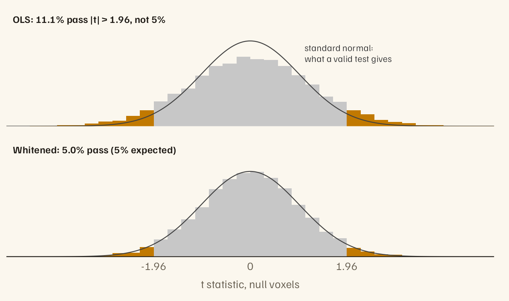

fMRI noise is autocorrelated, and ordinary least squares ignores that. Its standard errors come out too small, so a 5% threshold passes far more than 5% of voxels with no effect. fmriAR estimates an AR or ARMA model of the noise from the residuals of a first fit, then whitens the design matrix and the data with the same filter, so an ordinary linear fit on the whitened matrices gives valid standard errors.

From the simulated study in vignette("fmriAR-introduction"): two runs, an event-related task, AR(1) noise. Orange bars are false positives at |t| > 1.96.
The filtering runs in C++ (RcppArmadillo, with OpenMP when available). Estimation respects run boundaries and censored volumes: it never pairs a volume with one from another run or across a censored gap.
Installation
install.packages("fmriAR")
# Development version
# install.packages("remotes")
remotes::install_github("bbuchsbaum/fmriAR")Quick start
X is the design matrix (volumes × regressors), Y the data (volumes × voxels), and runs gives a run label for every volume.
library(fmriAR)
# 1. Fit OLS and keep the residuals
ols <- lm.fit(X, Y)
# 2. Estimate the noise model. design = X corrects the bias that fitting
# puts into residual autocorrelation; pass it whenever the residuals
# come from a fitted model.
plan <- fit_noise(ols$residuals, runs = runs, design = X)
# 3. Whiten the design and the data with the same filter
w <- whiten_apply(plan, X, Y, runs = runs)
# 4. Refit, and compute standard errors on the whitened matrices
fit <- lm.fit(w$X, w$Y)
se <- sandwich_from_whitened_resid(w$X, w$Y, beta = fit$coefficients)$sewhiten(X, Y, runs = runs) does steps 1 to 3 in one call, and corrects for X on its own.
To check the result, acorr_diagnostics() returns each voxel’s residual autocorrelation by lag. Getting started shows how to compare it with the range that white noise gives after the same fit.
Censored volumes. Pass volumes flagged for motion as censor, as indices or a logical vector. Give the first fit one spike regressor per flagged volume, so their values cannot reach the residuals through the fitted coefficients. The flagged volumes are left out of the estimate, the filter restarts after each one, and the whitened output lists them so you can drop them before the final fit:
What it does
-
AR models. Yule–Walker on autocovariances pooled over voxels. With
p = "auto"(the default), BIC chooses the order, counting correlated voxels at a smaller effective number. -
ARMA models.
method = "arma"uses the Hannan–Rissanen procedure, pooled over voxels, refitted to the design-corrected autocovariance whendesignis given. AR(1) noise plus white scanner noise is ARMA(1,1). Set the orders yourself; the automatic ARMA search tends to pick the largest orders it is offered, and warns when it does. - Exact starts. The first volume of each run, and of each segment after a censored volume, gets the exact stationary initialisation, so within each segment whitening is exact generalised least squares for the fitted noise model.
-
Pooling. One noise model for all voxels and runs (
"global", the default), one per run ("run"), or one per parcel ("parcel"). Given nested parcellations, small parcels are steadied by pooling toward their parents, by weights that follow the evidence: parcels that genuinely differ keep their own estimates. -
Design-bias correction. Residuals carry rather than the noise covariance , which biases autocorrelation downward, most of all with slow regressors such as drift terms.
design = Xcorrects it for AR and ARMA models, with any pooling and with censoring, choosing a stable lag budget automatically. Without a design, the smaller bias from the estimator’s own per-run centring is still corrected.acvf_bias_matrix()caches the correction for datasets that share a design, run structure and censoring. -
Standard errors.
sandwich_from_whitened_resid()gives ordinary ("iid"), HC0, or Newey–West HAC standard errors (HAC within runs), and handles rank-deficient designs. -
Autocovariances.
noise_acvf()returns the run- and censor-aware autocovariances thatfit_noise()uses, with the number of volume pairs behind each lag. Plans also carry the autocovariance (gamma) and innovation variance (sigma2) they were fitted from. -
AFNI-style restricted filters.
afni_restricted_plan()builds a plan from AR poles in the form used by AFNI’s1dgenARMA11simulator (a real pole and complex pairs, plus an optional white-noise sharevrt). You supply them; fmriAR does not estimate them.
Learn more
Each vignette runs on simulated data with known answers, so every result can be checked:
-
Getting started (
vignette("fmriAR-introduction")): the false-positive problem, the four-step workflow, and the whiteness check. -
Refining the noise model (
vignette("fmriAR-noise-models")): whydesign = Xmatters, choosing the AR order, robust standard errors, ARMA, and AFNI-style filters. -
Noise that varies across the brain (
vignette("fmriAR-parcels")): per-parcel noise models and multiscale pooling.
Function reference: https://bbuchsbaum.github.io/fmriAR/reference/
Options
-
options(fmriAR.max_threads = n)caps the OpenMP threads used for whitening. OpenMP is used when the compiler supports it, and results are identical for any number of threads. -
options(fmriAR.use_cpp_hr = FALSE)switches the internal single-series Hannan–Rissanen helper from C++ to R.fit_noise()is unaffected: it uses the pooled estimator.
Validation
tools/validation/accuracy_benchmark.R, in the source repository (not the CRAN package), runs seeded accuracy, calibration and timing scenarios through the exported API, so two installed versions can be compared:
References
- Hannan, E. J., & Rissanen, J. (1982). Recursive estimation of mixed autoregressive-moving average order. Biometrika, 69(1), 81–94. https://doi.org/10.1093/biomet/69.1.81
- Cox, R. W. (2012). AFNI: What, where, how? NeuroImage, 62(2), 743–747. https://doi.org/10.1016/j.neuroimage.2011.08.056